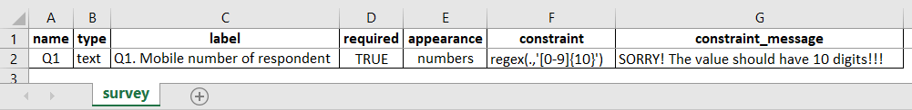

What do you need help with?
Search the knowledge base, browse our resources and visit our forum for more detail information
Search the knowledge base, browse our resources and visit our forum for more detail information
A regular expression, or regex, is a search pattern used for matching specific characters and ranges of characters within a string. It is widely used to validate, search, extract, and restrict text in most programming languages. KoBoToolbox supports regex to control the length and character(s) during data entry to a particular question (e.g. controlling the entry of mobile number to exactly 10 digits, controlling the entry of a valid email id etc.)
To use a regex in KoboToolbox, follow these steps:
Prepare a Text question type.
Go to the question’s Settings.
Go to Validation Criteria and choose the Manually enter your validation logic in XLSForm code option.
In the Validation Code box, enter your regex formula between the quotation marks (‘ ‘) of the regex(., ' ') format. For reference, the period (.) refers to ‘this question’, while the regular expression inside the quotation marks (‘ ‘) needs to conform to the established regex rules.
(Optional) Add a custom Error Message for the person entering data to see when they don’t meet the regrex criteria.

Regex can also be coded in XLSForm by typing the regex code under the constraint column.

Alternatively, there is another way of using regex in KoBoToolbox i.e. by creating a calculate question type and then defining the regex code under the calculation column. You could then use this variable as many times as needed in the survey form.

In addition to the examples and tips provided below, please visit this website for more help and examples.
Regex in KoBoToolbox should always be written in-between the apostrophes regex(., ‘ ‘) as shown in the examples.
^: The caret symbol (^) matches the start of a string without consuming any character.
$: The dollar symbol ($) matches the end of a string without consuming any character.
[abc]: Matches either a, b or c from within the [ ].
[a-z]: Matches any lowercase character from a to z.
[A-Z]: Matches any uppercase character from A to Z.
[0-9]: Matches any numbers from 0 to 1.
[a-zA-Z0-9]: Matches any character from a to z or A to Z or 0 to 9. You could combine anything required.
[^abc]: Matches any character except a, b or c if the caret symbol (^) is used inside [ ].
[^A-Z]: Matches any characters except those in the range A to Z if the caret symbol (^) is used inside [ ].
(apple): The grouping character ( ) matches anything that is within the parenthesis. Here, (apple) matches the characters apple literally (case sensitive).
|: A vertical bar also known as Boolean matches any element separated by the vertical bar.
: A back slash is used to match the literal value of any metacharacter (e.g. try using . or @ or $ while building regex).
\number: Matches the same character as most recently matched by the nth (number used) capturing group.
\s: Matches any space or tab.
\b: Matches, without consuming any characters immediately between a character matched by \w and a character not matched by \w (in either order). \b is also known as the word boundary.
\d: Matches any equivalent numbers (0 to 9).
\D: Matches anything other than numbers (0 to 9).
\w: Matches any word character (i.e. a to z or A to Z or 0 to 9 or _).
\W: Matches anything other than what \w matches (i.e. it matches wild cards and spaces).
?: A question mark (?) used just behind a character matches or skips (if not required) a character match.
*: An asterisk symbol * used just behind a character matches zero or more consecutive character.
+: The plus symbol (+) used just behind a character matches one or more consecutive character.
{x}: Matches exactly ‘x’ consecutive characters.
{x,}: Matches at least ‘x’ consecutive characters (or more).
{x,y}: Matches between ‘x’ and ‘y’ consecutive characters.
Examples related to use of numbers (for all text questions that use numbers, do not forget to type numbers under the appearance column)
Restrict mobile number to ten digits : regex(., ‘^[0-9]{10}$’) or regex(., ‘^\d{10}$’)
Restrict an input to 1234.56.78 format: regex(., ‘^[0-9]{4}.[0-9]{2}.[0-9]{2}$’) or regex(., ‘^\d{4}.\d{2}.\d{2}$’)
Restrict an input between 01 to 99 digits where input format of a single number (like 1 or 2) is not allowed: regex(., ‘^[01-99]{2}$’) and (. >= 01)
Restrict an input to only two numbers i.e. either to 12 or 345: regex(., ‘^(12|345)$’)
Restrict an input of nine digits where the first number can’t be 0: regex(., ‘^1-9][0-9]{8}$’) or **regex(., ‘^[^0$]’)
Restrict an input to one digit in between 0 to 9: regex(., ‘^\d$’)
Restrict an input to five digits in between 0 to 9: regex(., ‘^\d{5}$’)
Restrict an input to two digits and three decimals (e.g. 12.345): regex(., ‘\d{2}.\d{3}$’)
Restrict an input to two digits and three decimals (while the decimals are optional) (e.g. 12 or 12.345): regex(., ‘^\d{2}(.\d{3})?$’)
If you wish to use a regex constraint on a number, make sure you ALWAYS type numbers under the appearance. This restricts the display of alphabets, making only numbers visible for inputs.
Be careful, with the mode of data collection (i.e. KoBoCollect android app or Enketo web forms) you wish, once you have completed designing and deploying your survey forms (using regex). This is because, KoBoCollect android app and Enketo web forms behaves a bit differently with regex. KoBoCollect android app behaves as if you have used the anchors (^ $) around the regex (even if you have not used them), while Enketo requires the anchors as mandatory for an exact match.